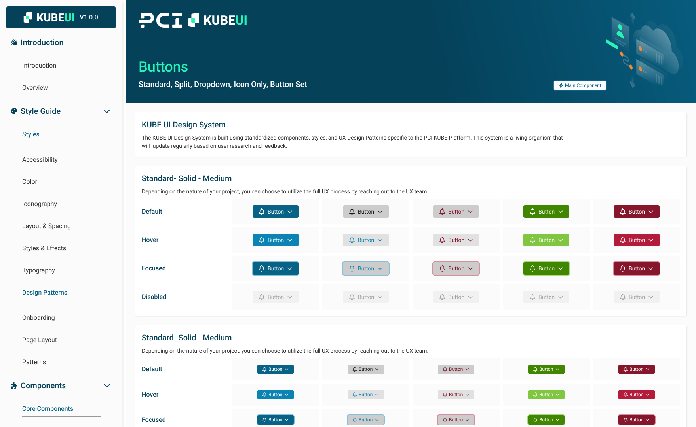
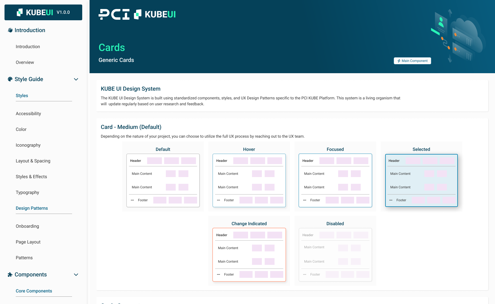
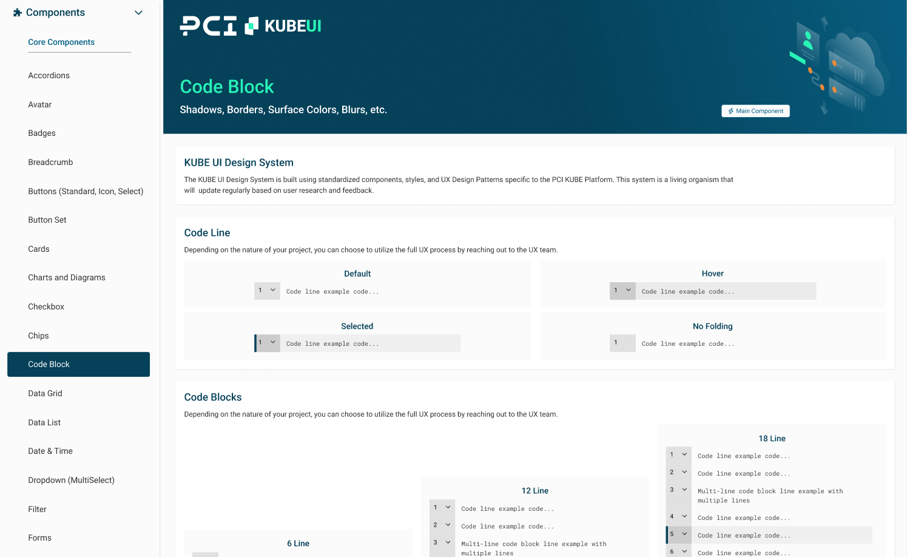
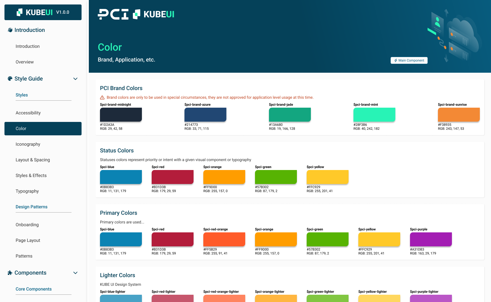

PCI Energy Solutions is a comprehensive software suite for energy optimization, wholesale market trading, and management.
Recently PCI invested heavily in adopting a user-centric approach to their product design. Up until this point, product teams made their own decisions about their chosen front-end technologies and design choices. The design choices were made purely from a functional standpoint and over time the entire product suite became a frankensteined implementation requiring extensive training to understand, let alone use.
This lead our newly implemented UX team to take on the task of creating a Design System that would fit the copmpanies needs. The goals were simple:
- Gain consistency across different products
- Provide developers, future designers, and product stakeholders a robust guide to build new applications or enhance exzisting ones
- Allow for faster development with less need for solution finding
Given the existing nature and company culture, it was easy to determine that a unified component library was necessary for teams to ensure they can build consistent experiences across a large array of products.

Foundations
After working with our UI Developers and researching multiple foundational libraries, we determined using Prime React UI as a basis would be ideal for our needs. We would be utilizing React JS to build the Kube UI Apps. The PCI Kube Design System would encompass design patterns, styles, and custom versions of components in a single location.
Documentation is Key
As with any good Design System, we maintain and edit our documentation and system as new patterns emerge and prove efficient. It is a living system within the product development process that will change and evolve overtime.



Challenges
During the initial phases, the design team consisted of 2 members. The original styles and components were created in Adobe XD by myself and our UX manager.
We transitioned to Figma towards the end of the 2022 year. I took on the role of transferring existing components into Figma. During this time, I was able to create a much more organized and useable file structure and became our Figma Guru of sorts. Finding solutions to meet our specific design needs is a passion of mine now.
Data Grids Ex:

Where we are now / Conclusion
Since then I have been maintaining, enahncing, and documenting our Design System on a near daily basis. We are constantly reviewing accessibility standards, Figma specific features, and other design systems so that we can provide PCI the ability to develop products seemlessly!